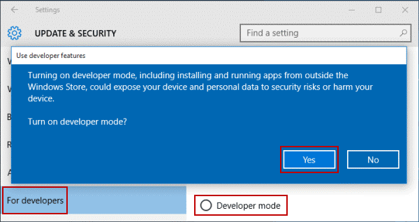
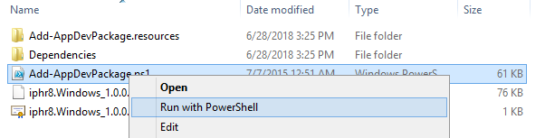
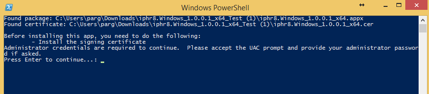
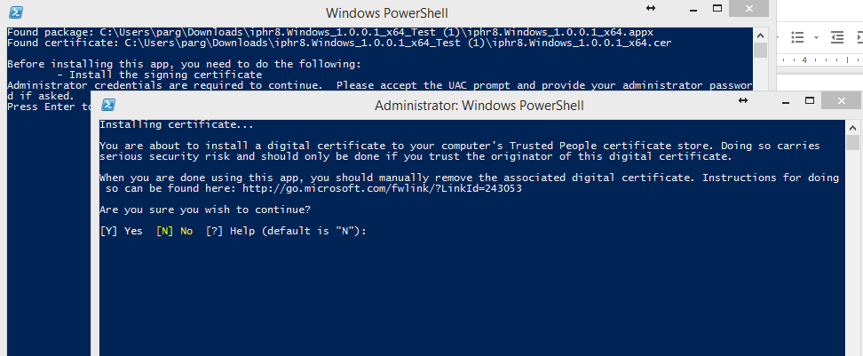
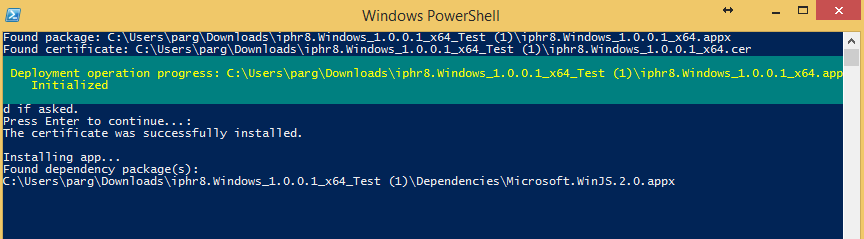
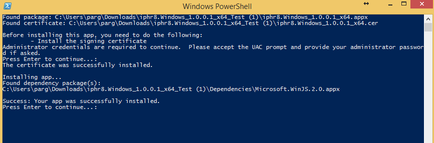

The developed app is available as an individual web site, accessible online (https://www.iphr.care), completely adaptive and responsive, and able to be viewed by all modern mobile devices.
In addition, the app is also available as Android, Windows Phone (8.1, 10) and IOS app, although it has not been published in the various app stores. However, it can be downloaded using the following instructions and URLs:
For Android :
For Windows Phone and desktop (8.1, 10), the apps can be downloaded using:
Download the corresponding zip files and unzip them in the preferred location.
For Windows 8.1 and Windows 10 desktop the installation instructions are:
** For Windows 10 an extra first step is required:
Enable Developer Mode in Windows 10
Step 1: Open Settings.
Step 2: Choose Update & security.
Step 3: Select For developers, click Developer mode and tap Yes in the pop-up dialog to turn it on.

The following steps are the same for both version 8.1 and 10 windows desktop apps:
Right click on the “Add-AppDevPackage.ps1” (Windows 10) or “Add-AppDevPackage.ps1” (Windows 8) and select “Run with PowerShell”.

Screens like the following images will appear:
Press Enter to continue when this screen appears.

Press Y when this screen appears.


After it finishes the app can be found in the list of apps in the START menu.
For Windows 10 mobile the installation instructions are:
For IOS, application usage and testing is possible by emailing the Serial Number of the individual device to the development team in order to provide a working .ipa file to be installed in the device. For testing it in an emulator environment is available in the following URL: https://gonative.io/share/njlrmr
Nevertheless the online web site offers a similar unique experience for managing your health data.